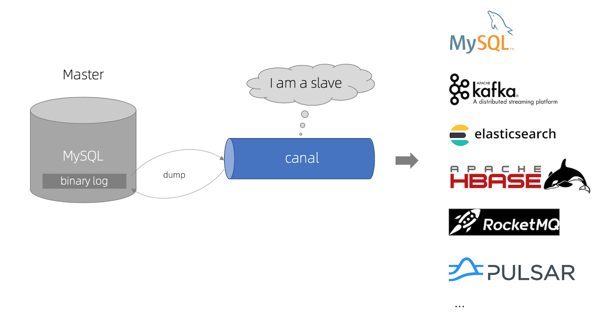

并发场景下，读请求会先查缓存，缓存未命中则会去DB取数据并更新到缓存中(可能会出现穿透情况)，更新缓存可能会失败导致缓存和DB不一致。对于写请求，缓存和DB的操作不在一个事务中，可能只有一个操作成功而另一个操作失败，从而导致数据不一致。
缓存DB一致性方案
一、基础
在高并发的业务场景下，数据库大多数情况都是用户并发访问最薄弱的环节。所以，就需要使用缓存如Redis做一个缓冲操作，让请求先访问到Redis，而不是直接访问MySQL等数据库。引入缓存后，一旦涉及到数据库更新，在高并发场景下就会出现数据库和缓存不一致的情况。
二、方案
延时双删 + 过期时间
- 先删除缓存
- 再写数据库
- 休眠一段时间(需要评估时间)
- 再次删除缓存
MQ异步更新缓存(基于订阅binlog的同步机制)
- 更新数据库，产生binlog
- 订阅分析binlog
- 通过MQ将分析后的binlog推送到redis
- redis更新数据
其他
先写MySQL，再删Redis(推荐)
先写MySQL，再写Redis(常用)
先写Redis，再写MySQL(不常用)
先删Redis，再写MySQL(不常用)
先删Redis，再写MySQL，再删Redis(延时双删，实现复杂)
先写MySQL，通过binlog+MQ，异步更新Redis(异步更新，实现复杂)
三、参考
数据库中间件
一、Canal
- canal，发音
[kə'næl]，原意为水道/管道/沟渠等。它是阿里巴巴旗下的一款开源项目，纯Java开发，主要用途是基于MySQL数据库增量日志解析，提供增量数据订阅和消费。早期阿里巴巴因为杭州和美国双机房部署，存在跨机房同步的业务需求，实现方式主要是基于业务trigger获取增量变更。从2010年开始，业务逐步尝试数据库日志解析获取增量变更进行同步，由此衍生出了大量的数据库增量订阅和消费业务。

基于日志增量订阅和消费的业务包括
- 数据库镜像
- 数据库实时备份
- 索引构建和实时维护(拆分异构索引、倒排索引等)
- 业务cache刷新
- 带业务逻辑的增量数据处理
- 当前的canal支持源端MySQL版本包括5.1.x,5.5.x,5.6.x,5.7.x,8.0.x
使用
- 工作原理
- canal模拟MySQL slave的交互协议，伪装自己为MySQL slave，向MySQL master发送dump协议
- MySQL master收到dump请求，开始推送binary log给slave(即canal)
- canal解析binary log对象(原始为byte流)
- 工作原理
二、Cobar
Cobar是阿里巴巴开源的一个对应用保持透明的MySQL数据库分布式处理中间件，它可以让传统的数据库得到良好的线性扩展，并看上去还是一个数据库，对应用保持透明。
参考
三、Mycat
Mycat是一个开源的分布式数据库系统，是一个数据库中间件，也可以理解为是数据库代理。在架构体系中是位于数据库和应用层之间的一个组件，并且对于应用层是透明的，即数据库感受不到Mycat的存在，认为是直接连接的MySQL数据库(实际上是连接的Mycat，Mycat实现了MySQL的原生协议)。
数据库系统需要存储引擎，而Mycat没有，所以它并不是完全意义的分布式数据库系统
分片规则：在数据切分处理中，特别是水平切分中，中间件最终要的两个处理过程就是数据的切分、数据的聚合。选择合适的切分规则，至关重要，因为它决定了后续数据聚合的难易程度，甚至可以避免跨库的数据聚合处理。
基本元素
- 逻辑库：mycat中存在，对应用来说相当于mysql数据库，后端可能对应了多个物理数据库，逻辑库中不保存数据。
- 逻辑表：逻辑库中的表，对应用来说相当于mysql的数据表，后端可能对应多个物理数据库中的表，也不保存数据。
- 分片表：进行了水平切分的表，具有相同表结构但存储在不同数据库中的表，所有分片表的集合才是一张完整的表
- 非分片表：垂直切分的表，一个数据库中就保存了一张完整的表
- 全局表：所有分片数据库中都存在的表，如字典表，数量少，由mycat来进行维护更新
- ER关系表：mycat独有，子表依赖父表，保证在同一个数据库中
特性
- 支持SQL92标准
- 支持MySQL、Oracle、DB2、SQL Server、PostgreSQL等DB的常见SQL语法
- 遵守Mysql原生协议，跨语言，跨平台，跨数据库的通用中间件代理。
- 基于心跳的自动故障切换，支持读写分离，支持MySQL主从，以及galera cluster集群。
- 支持Galera for MySQL集群，Percona Cluster或者MariaDB cluster
- 基于Nio实现，有效管理线程，解决高并发问题。
- 支持数据的多片自动路由与聚合，支持sum,count,max等常用的聚合函数,支持跨库分页。
- 支持单库内部任意join，支持跨库2表join，甚至基于caltlet的多表join。
- 支持通过全局表，ER关系的分片策略，实现了高效的多表join查询。
- 支持多租户方案。
- 支持分布式事务(弱xa)。
- 支持XA分布式事务(1.6.5)。
- 支持全局序列号，解决分布式下的主键生成问题。
- 分片规则丰富，插件化开发，易于扩展。
- 强大的web，命令行监控。
- 支持前端作为MySQL通用代理，后端JDBC方式支持Oracle、DB2、SQL Server 、 mongodb 、巨杉。
- 支持密码加密
- 支持服务降级
- 支持IP白名单
- 支持SQL黑名单、sql注入攻击拦截
- 支持prepare预编译指令(1.6)
- 支持非堆内存(Direct Memory)聚合计算(1.6)
- 支持PostgreSQL的native协议(1.6)
- 支持mysql和oracle存储过程，out参数、多结果集返回(1.6)
- 支持zookeeper协调主从切换、zk序列、配置zk化(1.6)
- 支持库内分表(1.6)
- 集群基于ZooKeeper管理，在线升级，扩容，智能优化，大数据处理(2.0开发版)。
自增ID
一、基础
二、实战
- 创建测试数据库
show create database auto_test; - 切换数据库
use auto_test; - 创建测试数据表
create table test1(id int primary key auto_increment); - 插入测试数据
1 | insert into test1 value(); |
- 查看数据
select * from test1; - 查看自增信息
- 方式一：
show create table test1; - 方式二：
select * from information_schema.tables where table_schema='auto_test' and table_name='test1';
- 方式一：
- 修改自增信息
alter table test1 auto_increment=1000; - 查看自增信息
- 插入测试数据
insert into test1 value(); - 查看数据
select * from test1;
三、扩展
- 当前会话生效：
set auto_increment_offset=3;或set session auto_increment_offset=3; - 全局会话生效：
set global auto_increment_offset=3;- 服务重启后失效，或再次全局修改后失效
- 永久会话生效，修改my.cnf，添加
auto_increment_offset=3- brew安装的MySQL配置文件位置
mysql --help| grep my
- brew安装的MySQL配置文件位置
连接池
定义：数据库连接池(Connection pooling)是指程序启动时建立足够的数据库连接，并将这些连接组成一个连接池，由程序动态地对连接池中的连接进行申请、使用、释放。
过程：数据库连接池在初始化时将创建一定数量的数据库连接放到连接池中，连接的数量是由最小数据库连接数来设定的。无论这些数据库连接是否被使用，连接池都将一直保证至少拥有这么多的连接数量。连接池的最大数据库连接数量限定了这个连接池能占有的最大连接数，当应用程序向连接池请求的连接数超过最大连接数量时，这些请求将被加入到等待队列中。
工作原理：连接池技术的核心思想是连接复用，通过建立一个数据库连接池以及一套连接使用、分配和管理策略，使得该连接池中的连接可以得到高效、安全的复用，避免了数据库连接频繁建立、关闭的开销。连接池的工作原理主要由三部分组成，分别为连接池的建立、连接池中连接的使用管理、连接池的关闭：
- ①连接池的建立
- 一般在系统初始化时，连接池会根据系统配置建立，并在池中创建了几个连接对象，以便使用时能从连接池中获取。连接池中的连接不能随意创建和关闭，这样避免了连接随意建立和关闭造成的系统开销。Java中提供了很多容器类可以方便的构建连接池，例如Vector、Stack等。
- ②连接池的管理
- 连接池管理策略是连接池机制的核心，连接池内连接的分配和释放对系统的性能有很大的影响。其管理策略是：
- 当客户请求数据库连接时，首先查看连接池中是否有空闲连接:
- 如果存在空闲连接，则将连接分配给客户使用；
- 如果没有空闲连接，则查看当前所开的连接数是否已经达到最大连接数，如果没达到就重新创建一个连接给请求的客户；
- 如果达到就按设定的最大等待时间进行等待，如果超出最大等待时间，则抛出异常给客户。
- 当客户释放数据库连接时，先判断该连接的引用次数是否超过了规定值，如果超过就从连接池中删除该连接，否则保留为其他客户服务。
该策略保证了数据库连接的有效复用，避免频繁的建立、释放连接所带来的系统资源开销。
- 当客户请求数据库连接时，首先查看连接池中是否有空闲连接:
- 连接池管理策略是连接池机制的核心，连接池内连接的分配和释放对系统的性能有很大的影响。其管理策略是：
- ③连接池的关闭
- 当应用程序退出时，关闭连接池中所有的连接，释放连接池相关的资源，该过程正好与创建相反。
- ①连接池的建立
- 对比
- 传统连接
- ①装载数据库驱动程序；
- ②建立数据库连接；
- ③访问数据库，执行SQL语句；
- ④断开数据库连接。
- 传统连接
- 数据库连接池
- ①程序初始化时创建连接池；
- ②使用时向连接池申请可用连接；
- ③使用完毕，将连接返还给连接池；
- ④程序退出时，断开所有连接，并释放资源。
线上数据迁移
一、基础
- 注意
- 是否停机维护
- 选用正确的工具，方便快捷
- Dbmate
- Ladder
- Phinx
- Flyway
- TiDB
- KingBase Explorer
- 整体考虑迁移计划
- 提前备好方案
- 中断回退
- 兼容性
- 完整性
- 管理好权限
- 按逻辑组逐步迁移
- 迁移后的全面测试
- 是否考虑专业服务
- 总结迁移带来的经验
- 做好下次迁移的准备
MySQL utf8mb4排序规则选择完整指南
一、先搞懂后缀含义
1. 后缀 ci / cs / bin
- ci = case insensitive（不区分大小写）
A=a、Abc=ABC，日常业务最常用 - cs = case sensitive（区分大小写）
A≠a，账号、验证码、密码明文存储场景用 - bin = binary（二进制逐字节比较）
完全按字节码对比，区分大小写、区分重音、区分全半角，严格匹配
2. 中间段 general / 0900 / unicode
- utf8mb4_general_ci
老通用校对规则，兼容性极强，MySQL5.5/5.7 默认；
排序精度一般，部分特殊字符、多国语言排序不准，速度略快。 - utf8mb4_unicode_ci
基于 Unicode 4.0 标准，多语言排序更标准，5.7 推荐替代 general。 - utf8mb4_0900_xxx
MySQL8.0新增，基于 Unicode 9.0，支持最全 emoji、生僻字、少数民族文字、全新汉字排序，8.0 最优选择。
二、三种常用规则对比
| 规则 | 区分大小写 | 区分重音 | 适用MySQL版本 | 适用场景 |
|---|---|---|---|---|
| utf8mb4_general_ci | ❌ 不区分 | ❌ | 5.7 / 8.0 通用 | 老项目、仅中文简单业务、兼容低版本 |
| utf8mb4_unicode_ci | ❌ 不区分 | ✅ | 5.7/8.0 | 多语言海外业务、需要标准文字排序 |
| utf8mb4_0900_ai_ci | ❌ 不区分 | ❌ | 仅8.0+ | 新项目8.0首选，最全emoji/汉字支持 |
| utf8mb4_0900_bin | ✅ 区分大小写 | ✅ 严格二进制 | 仅8.0+ | 唯一值校验、验证码、密钥、敏感编码 |
ai = accent insensitive（不区分重音）
as = accent sensitive（区分重音）
三、什么时候选 utf8mb4_0900_bin
适用场景
- 字段需要严格区分大小写：用户名、邀请码、token、订单编号、密钥
ABC123和abc123视为两个不同值，不会重复冲突
- 需要区分全角/半角、特殊符号、大小写混合唯一索引
- 存储哈希值、UUID、加密串、编码字符串，必须精准匹配
缺点
- 查询模糊匹配时大小写敏感，
like 'A%'查不到a123 - 排序按二进制码，中文排序顺序不符合日常拼音
四、什么时候选 utf8mb4_general_ci
适用场景
- 项目使用 MySQL5.7（无0900系列规则）
- 老旧系统、第三方插件强制要求 general 兼容
- 纯中文后台，不需要复杂多国文字排序
缺点
生僻汉字、韩文、阿拉伯文排序错乱，部分emoji兼容差。
五、通用标准最佳实践（直接照抄）
1. MySQL 8.0 新项目（推荐）
数据库/表默认（绝大多数业务：姓名、标题、内容、手机号）
1 | CREATE DATABASE test DEFAULT CHARACTER SET utf8mb4 DEFAULT COLLATE utf8mb4_0900_ai_ci; |
- 不区分大小写，不区分拼音重音，汉字、emoji支持最全
特殊唯一字段（账号、验证码、token）单独指定bin
1 | username VARCHAR(50) COLLATE utf8mb4_0900_bin UNIQUE |
2. MySQL 5.7 项目（无0900）
1 | CREATE DATABASE test DEFAULT CHARACTER SET utf8mb4 DEFAULT COLLATE utf8mb4_unicode_ci; |
老系统兼容兜底用 general_ci：utf8mb4_general_ci
六、避坑重点
- 不要用 utf8，MySQL 的 utf8 是阉割版，存不了emoji，一律 utf8mb4
- 不要全库统一用 bin：日常姓名、商品名模糊查询会非常难用，只给特殊字段单独设置bin
- 同一库下表、字段排序规则要统一，否则关联查询会报校对规则冲突
- 0900 系列只能在 MySQL8.0 使用，5.7 执行会直接报错
七、快速总结一句话
8.0 普通业务库：
utf8mb4_0900_ai_ci8.0 账号/编码唯一字段：单独
utf8mb4_0900_bin5.7 新项目：
utf8mb4_unicode_ci5.7 老旧兼容项目：
utf8mb4_general_ci
MySQL 8.4 新项目排序规则完整方案
MySQL 8.4全系内置
utf8mb4_0900系列，官方默认、新项目唯一首选基准规则，彻底抛弃general_ci / unicode_ci。
一、先看懂后缀含义（8.4专用）
utf8mb4_0900_ai_ci（库/表全局默认）- 0900 = Unicode 9.0 最新标准，生僻字、emoji、多国文字排序最标准
- ai = accent-insensitive 不区分拼音重音
- ci = case-insensitive 不区分大小写
- 绝大多数业务：姓名、标题、商品、手机号、普通用户名、文本描述统一用这个
utf8mb4_0900_bin（仅特殊字段单独指定）
二进制逐字节对比：区分大小写、区分重音、区分全半角，严格精准匹配。
适用：token、API密钥、验证码、哈希密码、邀请码、大小写敏感账号、唯一编码。补充极少用细分（业务几乎不用）
utf8mb4_0900_as_ci：区分重音、不区分大小写（地名、外文姓名）utf8mb4_0900_as_cs：区分重音+区分大小写（极少场景）
二、8.4 建库标准SQL（直接复制）
1. 通用业务库（99%项目用这个）
1 | CREATE DATABASE IF NOT EXISTS business_db |
- 库、表默认全部走
0900_ai_ci，模糊查询、排序、中文拼音匹配最友好。
2. 特殊区分大小写字段写法（建表示例）
1 | CREATE TABLE `user` ( |
规则：库/表统一 ai_ci，只有需要严格二进制匹配的字段单独加 COLLATE bin，不要全库用 bin。
三、为什么8.4不要用 general_ci / unicode_ci
utf8mb4_general_ci：老旧简化算法，生僻汉字、日韩文、emoji排序错乱，8.x官方已不推荐新项目使用。utf8mb4_unicode_ci：基于 Unicode 4.0，标准老旧，性能、字符兼容都不如 0900 系列。0900_ai_ci优势：- 原生支持全部4字节emoji、罕见生僻汉字、少数民族文字
- 排序符合现代Unicode规范，中英文混合分页排序更合理
- 8.4内核优化，对比、索引查询性能优于旧规则
四、场景速查表（8.4直接对照选）
| 业务字段类型 | 排序规则 | 原因 |
|---|---|---|
| 商品名称、标题、备注、简介 | utf8mb4_0900_ai_ci | 模糊搜索不区分大小写，中文排序正常 |
| 普通登录账号、邮箱 | utf8mb4_0900_ai_ci | 用户登录输入大写/小写都能匹配 |
| 密码哈希、Token、API Key、UUID | utf8mb4_0900_bin | 大小写不同视为不同值，防止校验漏洞 |
| 邀请码、订单编码、设备ID | utf8mb4_0900_bin | 大小写唯一，避免重复冲突 |
| 外文带重音人名/地名 | utf8mb4_0900_as_ci | 需要区分音调 |
五、避坑要点
- 禁止使用 utf8（utf8mb3）：仅3字节，无法存储emoji，全程统一
utf8mb4。 - 不要整张表/整个库设置
_bin：会导致LIKE 'A%'查不到小写数据，前端搜索体验极差。 - 同库所有表默认排序规则保持一致（
0900_ai_ci），否则联表查询报校对规则不兼容报错。 - 8.4不存在版本兼容问题，
0900系列完整支持，不用降级到 general。
六、一句话总结 MySQL8.4 规范
- 创建数据库默认：utf8mb4_0900_ai_ci
- 密钥、验证码、大小写唯一字段：单独字段指定 utf8mb4_0900_bin
- 彻底放弃 general_ci、unicode_ci。
Windows查看MySQL服务是否运行
一、方案
Win+R，输入services.msc，打开服务管理器，查看有没有MySQL相关服务、
CMD/PowerShell
- 先查出本机所有 MySQL 服务名（通用）：sc queryex type=service state=all | findstr /i mysql
- 单独查询指定服务状态：sc query mysql-8.4
- 筛选所有：net start | findstr /i mysql
- 启动：net start mysql-8.4 # 启动
- 停止：net stop mysql-8.4 # 停止
通过任务管理器查看：Ctrl+Shift+Esc，查看mysqld.exe服务
通过集成环境查看，如phpstudy/Laragon